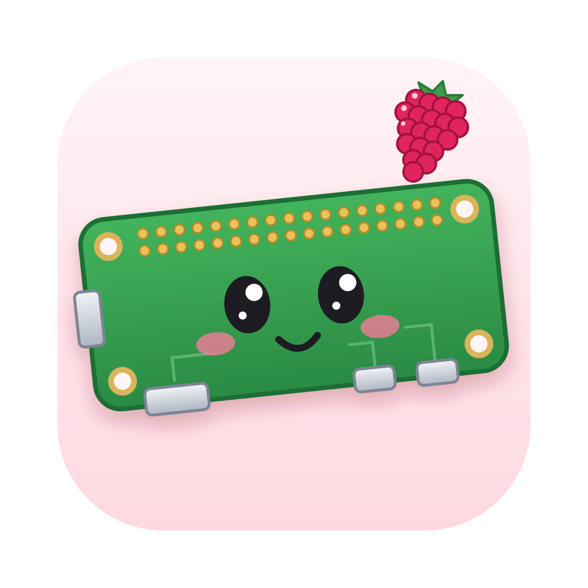

Zero Lab
A Raspberry Pi Zero 2 W on your computer.
Boot a virtual Pi, wire up buttons, knobs and LEDs to its GPIO pins, and drop in your own code to build and run on it.
macOS
Apple Silicon (M1 or newer), macOS 26+. Fastest version.
- Open the .dmg and drag Zero Lab to Applications.
- First launch: System Settings → Privacy & Security → Open Anyway (the app isn't notarized by Apple).
Windows
Windows 10 or 11, 64-bit. No WSL needed.
- Run the installer. If SmartScreen warns, click More info → Run anyway (the app isn't code-signed).
- Start Zero Lab from the Start menu.
Linux
64-bit x86 Linux. One file, nothing to install.
- Make it runnable:
chmod +x Zero-Lab-*.AppImage(or Properties → Allow executing). - Double-click it to start Zero Lab.